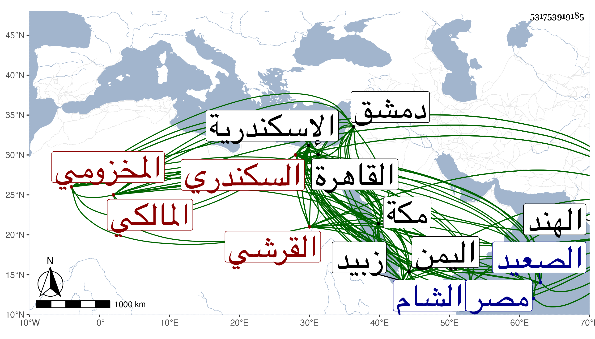

0902Sakhawi.DawLamic.ITO20230111-ara1.EIS1600.531753919185
Biography ID: 531753919185
440
محمد بن أبي بكر بن عمر بن أبي بكر بن محمد بن سليمان بن جعفر ابن يحيى بن حسين بن محمد بن أحمد بن أبي بكر بن يوسف بن علي بن صالح ابن إبراهيم البدر القرشي المخزومي السكندري المالكي ويعرف بابن الدماميني وهو حفيد أخي البهاء عبد الله بن أبي بكر شيخ شيوخنا وأخيه محمد شيخ الزين العراقي وسبط ناصر الدين بن المنير مؤلف المقتفي والانتصاف من الكشاف ، والثلاثة من المائة الثامنة . ولد سنة ثلاث وستين وسبعمائة باسكندرية وسمع بها من البهاء بن الدماميني قريبه المشار إله وعبد الوهاب القروي في آخرين وكذا بالقاهرة من السراج بن الملقن والمجد إسماعيل الحنفي وغيرهما وبمكة من القاضي أبي الفضل النويري ، واشتغل ببلده على فضلاء وقته فمهر في العربية والأدب وشارك في الفقه وغيره لسرعة ادراكه وقوة حافظته ، ودرس باسكندرية في عدة مدارس وناب بها عن ابن التنسي في الحكم وقدم معه القاهرة وناب بها أيضا بل تصدر بالأزهر لإقراء النحو ، ودخل دمشق مع ابن عمه سنة ثمانمائة وحج منها ثم رجع إلى بلده وأقام بها تاركا النيابة بل ولى خطابة جامعها مع إقباله على الاشتغال وإدارة دولاب متسع للحياكة وغير ذلك إلى أن وقف عليه مال كثير بل واحترقت داره ففر من غرمائه إلى جهة الصعيد فتبعوه أحضروه إلى القاهرة مهانا فقام معه التقي بن حجة وأعانه كاتب السر ناصر الدين بن البارزي حتى صلح حاله وحضر مجلس المؤيد ، وعين لقضاء المالكية بمصر فرمى بقوادح غير بعيدة عن الصحة ، واستمر مقيما إلى شوال سنة تسع عشرة فحج وسافر لبلاد اليمن في أول التي تليها فدرس بجامع زبيد نحو سنة ولم يرج له بها أمر فركب البحر إلى الهند فاقبل عليه أهلها كثيرا وأخذوا عنه وعظموه وحصل دنيا عريضة فلم يلبث أن مات ، وكان أحد الكملة في فنون الأدب أقر له الأدباء بالتقدم فيه وبإجادة القصائد والمقاطيع والنثر ، معروفا باتقان الوثائق مع حسن الخط والمودة ، وصنف نزول الغيث انتقد فيه أماكن من شرح لامية العجم للصلاح الصفدي المسمى بالغيث الذي انسجم قرضه له أئمة عصره فأمعنوا وكذا عمل تحفة الغريب في حاشية مغنى اللبيب وهما حاشيتان يمنية وهندية وقد أكثر من تعقبه فيها شيخنا التقي الشمني وكان غير واحد من فضلاء تلامذته ينتصر للبدر ، وشرح البخاري وقد وقفت عليه في مجلد وجلة في الإعراب ونحوه ، وشرح أيضا التسهيل والخزرجية وله جواهر البحور في العروض وشرحه والفواكه البدرية من نظمه ومقاطع الشرب وعين الحياة مختصر حياة الحيوان للدميري وغير ذلك وهو أحد من قرض سيرة المؤيد لابن ناهض . مات في شعبان سنة سبع وعشرين بكلبرجا من الهند ويقال أنه سم في عنبا ولم يلبث من سمه بعده إلا يسيرا ، ذكره ابن فهد في معجمه وشيخنا لكن في السنة التي تليها من انبائه . وأما في معجمه فأرخ وفاته كما هنا وقال إنه كان عارفا بالوثائق حسن الخط رائق النظم والنثر جالسته كثيرا وطارحته بها وكثر اجتماعنا في ذلك أجاز لي ولأولادي مرارا ، وذكره المقريزي في عقوده وأنه ممن لازم ابن خلدون وكان يقول لي أنه ابن خالته وأشار لأن ما رمى به من القوادح غير بعيد عن الصحة وأرخ وفاته في شعبان سنة سبع وعشرين . قلت وممن أخذ عنه الزين عبادة ورافقه إلى اليمن حتى أخذ عنه حاشية المغني وفارقه لما توجه إلى الهند . ونظمه منتشر ومنه وقد لزمه في دين شخص يعرف بالحافظي فقال للمؤيد وذلك في أيام عصيان نوروز الحافظي نائب الشام :
| أيا ملك العصر ومن جوده | فرض على الصامت واللافظ |
| أشكو إليك الحافظ المعتدي | بكل لفظ في الدجى غائظ |
| وما عسى أشكو وأنت الذي | صح لك البغي من الحافظ |
ومنه :
| رماني زماني بما ساءني | فجاءت نحوس وغابت سعود |
| وأصبحت بين الورى بالمشيب | عليلا فليت الشباب يعود |
وقوله :
| قلت له والدجى مول | ونحن بالأنس في التلاقي |
| قد عطس الصبح يا حبيبي | فلا تشمته بالفراق |
وقوله :
| يا عذولي في مغن مطرب | حرك الأوتار لما سفرا |
| كم يهز العطف منه طربا | عند ما تسمع منه وترى |
وقوله :
| بدا وكان قد اختفى من مراقبه | فقلت هذا قاتلي بعينه وحاجبه |
وقوله :
| لا ما عذاريك هما أوقعا | قلب المحب الصب في الحين |
| فجد له بالوصل واسمح به | ففيك قد هام بلامين |
وقوله :
| مذ تعانت صناعة الجبن خود | قتلتنا عيونها الفتانة |
| لا تقل لي كم مات فيها قتيل | كم قتيل بهذه الجبانة |
وقوله :
| قم بنا نركب طرف اللهو سبقا للمدام | واثن ياصاح عناني لكميت ولجام |
وقوله :
| الله أكبر يا محراب طرته | كم ذا تصلى بنار الحرب من صاب |
| وكم أقمت باحشائي حروب هوى | فمنك قلبي مفتون بمحراب |
وقوله وقد ولاه ناصر الدين بن التنسي العقود :
| يا حاكما ليس يلفي | نظيره في الوجود |
| قد زدت في الفضل حتى | قلدتني بالعقود |
وقوله في البرهان المحلي التاجر :
| يا سريا معروفه ليس يحصى | ورئيسا زكا بفرع وأصل |
| مذ علا في الورى محلك عزا | قلت هذا هو العزيز المحل |
وقوله في الشهاب الفارقي :
| قل للذي أضحى يعظم حاتما | ويقول ليس لجوده من لاحق |
| إن قسته بسماح أهل زماننا | أخطأ قياسك مع وجود الفارق |
وله مع شيخنا مطارحات كثيرة كان جلها في القرن قبله أودعت منها في الجواهر جملة بل أورد البدر بعضها فيما كتبه على البخاري متبجحا به .
